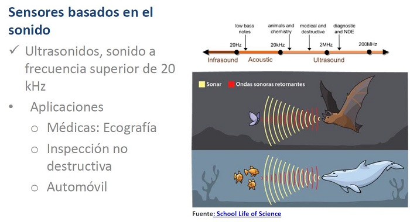
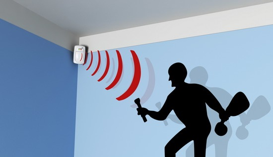
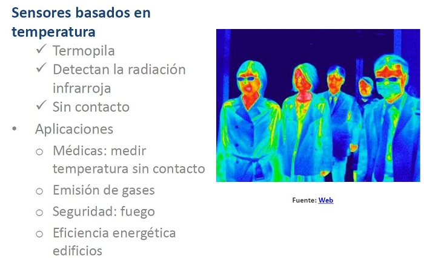
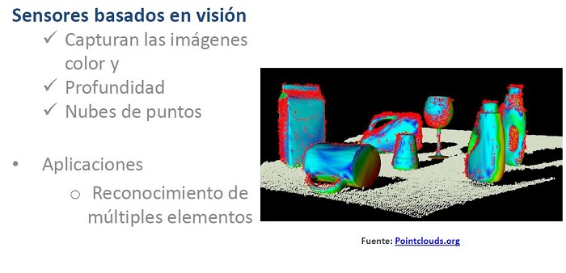

La PERCEPCIÓN de un robot es la interpretación de los datos recibidos a través de los sensores que incluye para la detección y reconocimiento de objetos y personas de su entorno
Introducción a la Robótica
2 ¿Cómo percibe un robot el mundo que le rodea?
Sensores basados en la luz haz click aquí
|
Son aquellos capaces de detectar cambios en la intensidad lumínica que reciben e incluso pueden llegar a detectar el color que tienen algunos objetos.
|
||
|
||
|
En el siguiente vídeo podrás ver cómo funciona el robot recolector de fresas Agrobot |
Sensores basados en el sonido


Sensores basados en la temperatura
Se utilizan, para medir la temperatura de una habitación o incluso detectar en un grupo de personas, cuál de ellas tiene fiebre

| Video Control accesos a un recinto mediante control de temperatura |
Sensores basados en la visión de objetos
Permiten detectar objetos de formas diferentes e incluso crear alarmas o intrucciones para apartar el producto en el caso de que contengan algun pequeño defecto

| Aplicaciones de la visión artificial. |
Ampliamos conocimientos
Copia y contesta en tu diario de aprendizaje las siguientes preguntas
1. ¿Podrías definir qué es un robot con tus palabras?
2. ¿Qué dos partes forman parte de un robot? Defínelas brevemente.
3. En el vídeo sobre los 2000 robots de la fábrica de coches SEAT, aparecen una líneas de color negro marcadas en el suelo ¿Para qué sirven esas líneas?
Puedes ver el vídeo del que te hablo, en la presentación del profesor o pinchando en este enlace:
https://www.youtube.com/watch?v=MDgOv5HWjwA&list=UU-zZEHZcc6AzBZ3iu55Eegg&index=54
Obra publicada con Licencia Creative Commons Reconocimiento No comercial Compartir igual 4.0